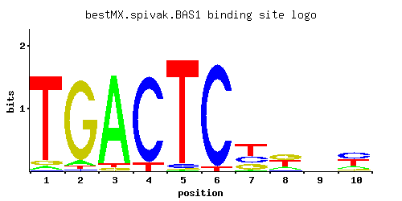

BAS1
YKR099W
Myb-related transcription factor involved in regulating basal and induced expression of genes of the purine and histidine biosynthesis pathways; also involved in regulation of meiotic recombination at specific genes
Best-performing DNA-binding model.

View and copy the recommended matrices ↘
A | 0.033 0.056 0.920 0.004 0.004 0.003 0.017 0.171 0.208 0.149 C | 0.006 0.014 0.003 0.908 0.035 0.955 0.268 0.074 0.227 0.414 G | 0.051 0.903 0.038 0.004 0.004 0.003 0.244 0.386 0.303 0.079 T | 0.911 0.026 0.038 0.085 0.958 0.040 0.472 0.371 0.262 0.359
A | 3 5 92 0 0 0 1 17 20 14 C | 0 1 0 90 3 95 26 7 22 41 G | 5 90 3 0 0 0 24 38 30 7 T | 91 2 3 8 95 4 47 37 26 35
A | -2.27 -1.74 1.06 -4.38 -4.38 -4.67 -2.94 -0.63 -0.43 -0.76 C | -3.40 -2.55 -4.09 1.62 -1.64 1.67 0.40 -0.89 0.23 0.83 G | -1.26 1.61 -1.56 -3.81 -3.81 -4.09 0.30 0.76 0.52 -0.82 T | 1.05 -2.51 -2.13 -1.33 1.10 -2.08 0.39 0.15 -0.20 0.12
Alternative candidate matrices 10
Historical matrix candidates from the original ScerTF database. Expand a source to inspect its original logo, scores, and matrix values.
BAS1_AFoat et. al.P = 0.002359View matrix ↘
BAS1_BFoat et. al.P = 3.88e-08View matrix ↘
BAS1_AFordyce et. al.P = 0.1308View matrix ↘
BAS1_BFordyce et. al.P = 0.0001998View matrix ↘
BAS1_CFordyce et. al.P = 1View matrix ↘
BAS1Harbison et. al.P = 2.55e-10View matrix ↘
BAS1Macisaac et. alP = 1.33e-17View matrix ↘
BAS1Pachkov et alP = 1.39e-06View matrix ↘
BAS1Zhu et. al.P = 2.47e-14View matrix ↘
BAS1Zhao and StormoP = 1View matrix ↘
Gene-level annotations and interactions.
Genes bound in ChIP-chip experiments 89 genes
YAL044C, YAL045C, YAL046C, YAL051W, YBR025C, YBR099C, YCL030C, YCR018C-A, YCR019W, YDL044C, YDL063C, YDL104C, YDR017C, YDR018C, YDR019C, YDR020C, YDR021W, YDR048C, YDR064W, YDR319C, YDR408C, YDR409W, YEL055C, YER061C, YER091C, YER092W, YER109C, YFL059W, YFL060C, YGL115W, YGL186C, YGL234W, YGL236C, YGL247W, YGR061C, YGR183C, YGR204W, YJL191W, YJL192C, YKL072W, YKL111C, YKL118W, YKL164C, YKL217W, YKR010C, YKR056W, YKR079C, YKR080W, YKR081C, YKR082W, YLL027W, YLR057W, YLR058C, YLR059C, YLR060W, YLR061W, YLR358C, YLR359W, YMR070W, YMR098C, YMR120C, YMR186W, YMR187C, YMR188C, YMR189W, YMR190C, YMR191W, YMR193W, YMR243C, YMR244W, YMR300C, YNL009W, YNL145W, YNL188W, YNL220W, YNL221C, YOL023W, YOL121C, YOR128C, YOR268C, YOR269W, YOR273C, YOR274W, YPL018W, YPL019C, YPL251W, YPL253C, YPR135W, YPR198W
Genes affected by TF deletion 666 genes
YCR012W, YCR040W, YDR034C-C, YDR366C, YER172C, YGL232W, YGL234W, YHL014C, YIL116W, YJR016C, YJR048W, YLR244C, YLR216C, YLR278C, YMR012W, YMR045C, YOL013W-A, YOR192C-A, YOR223W, YOR193W, YOR259C, YPL237W, YMR016C, YMR109W, YAL007C, YBR187W, YBR189W, YBR191W, YDL064W, YDL100C, YDR222W, YFR036W, YGR121C, YHR146W, YKL043W, YLR058C, YLR090W, YLR029C, YLR062C, YMR194W, YOR065W, YOR071C, YOR377W, YPL017C, YDR207C, YCR009C, YCR013C, YDR034C-D, YDR035W, YDR365W-B, YDR429C, YDR399W, YGL231C, YGR277C, YHL015W, YLR217W, YML113W, YMR046C, YNL084C, YOR192C, YOR222W, YOR192C-B, YOR226C, YPL238C, YPL177C, YPL208W, YPL240C, YPL210C, YAL053W, YML010W-A, YDR187C, YGL038C, YGR122C-A, YHR112C, YHR145C, YJL052W, YLR055C, YLR026C, YLR089C, YLR028C, YLR061W, YLR405W, YMR189W, YNL240C, YOR038C, YPL018W, YER011W, YBR092C, YBR124W, YDR098C, YFL012W, YGR001C, YGR061C, YGR033C, YGR035C, YJR145C, YKL016C, YLL001W, YLL034C, YMR134W, YNL175C, YOL104C, YOL077C, YOR317W, YPL266W, YPL110C, YBL027W, YCL019W, YDL162C, YDL226C, YER055C, YER056C-A, YER030W, YGL103W, YGL105W, YIL015C-A, YIL052C, YJL145W, YJL177W, YKL141W, YLR152C, YLR156W, YLR186W, YLR157C-A, YML027W, YMR314W, YMR256C, YMR290C, YNL333W, YNL303W, YNR028W, YJL050W, YBR093C, YBR129C, YDL004W, YDR127W, YDR159W, YDR098C-A, YDR161W, YDR461W, YDR497C, YFR006W, YJL017W, YMR070W, YMR131C, YMR135C, YNL174W, YNL178W, YNL116W, YOL103W-B, YOL139C, YOR344C, YPL271W, YBL024W, YBL058W, YCL020W, YDR340W, YDR281C, YER029C, YGL136C, YGL076C, YGR211W, YGR183C, YHR211W, YIL051C, YJL148W, YLR183C, YLR155C, YLR157C, YML024W, YNL300W, YNL332W, YNL302C, YNL334C, YNL306W, YPL079W, YPL081W, YBR010W, YBR012C, YBR012W-B, YDR046C, YHR001W-A, YIL124W, YJR026W, YJR091C, YJR028W, YJR060W, YKR081C, YLR282C, YLR227W-A, YLR287C-A, YMR020W, YMR050C, YMR052C-A, YML125C, YNL030W, YOR197W, YOR229W, YOR261C, YOR199W, YOR201C, YPL245W, YPL215W, YAL044C, YAR010C, YAR015W, YBR195C, YBR199W, YDL134C, YDL136W, YDR224C, YEL024W, YGR161C-C, YGR161W-A, YGR105W, YJL059W, YJL063C, YKL117W, YLR100W, YML004C, YLR410W-B, YLR441C, YLR412W, YNL279W, YNL284C-A, YOR009W, YOR073W, YOR043W, YOR389W, YBL091C, YBL092W, YBR009C, YBR012W-A, YCL056C, YCR047C, YCL064C, YER148W, YER122C, YGR285C, YIL117C, YJR025C, YJR027W, YKR046C, YKR048C, YKR080W, YLR285W, YLR256W-A, YMR017W, YML120C, YMR049C, YMR051C, YML124C, YNL054W-A, YNL059C, YOL052C, YOL022C, YOR260W, YOR198C, YOR230W, YOR200W, YOR232W, YOR202W, YOR234C, YPL249C-A, YJR148W, YLL008W, YAR009C, YDL135C, YDL075W, YDR225W, YEL051W, YGL016W, YGL048C, YGR161C-D, YGR161W-B, YJL122W, YLR099C, YLR101C, YLR437C, YLR438W, YLR410W-A, YNL248C, YNL220W, YOR072W, YOR046C, YPL026C, YDR502C, YGR038C-B, YHR089C, YLR007W, YLR348C, YMR145C, YNL155W, YOL144W, YOL088C, YOR323C, YOR298W, YPR060C, YLL016W, YNR016C, YBL003C, YBR265W, YCL030C, YDR347W, YGL111W, YIL022W, YIL056W, YHR215W, YIL060W, YJL217W, YKL145W, YKL180W, YLR192C, YLR196W, YMR291W, YNL309W, YNR033W, YNR035C, YPL086C, YPL088W, YPL090C, YPL122C, YPL092W, YBR101C, YDL040C, YDR471W, YFL016C, YGR038W, YGR012W, YIR035C, YJR123W, YJR156C, YLL037W, YLL041C, YLR343W, YLR349W, YMR142C, YOL111C, YOL143C, YOR294W, YOR298C-A, YOR328W, YAR071W, YAR075W, YBL002W, YBL032W, YCL025C, YBR296C, YDL231C, YDL201W, YDR316W-A, YDR346C, YER031C, YER090W, YER062C, YER064C, YGL078C, YGL112C, YGL148W, YGR187C, YGR253C, YKL212W, YKL181W, YKL214C, YLR129W, YLR161W, YLR163C, YLR195C, YML035C, YML063W, YML094W, YML095C-A, YMR290W-A, YMR321C, YNR001C, YNL310C, YNR003C, YNL312W, YNR036C, YNL314W, YNR038W, YPL117C, YPL091W, YBL099W, YBL101W-B, YBR052C, YER131W, YGL215W, YIL094C, YKR061W, YLR291C, YLR232W, YMR061W, YNL036W, YNL067W, YNL099C, YOR239W, YPL257W-A, YDL082W, YDR261W-A, YDR234W, YML010C-B, YLR420W, YMR242C, YNL289W, YOR393W, YBL101W-A, YDR019C, YDR447C, YDR417C, YER156C, YER188W, YER159C-A, YGL245W, YGL188C, YHL001W, YJR069C, YKR025W, YKR056W, YLR231C, YML126C, YML130C, YMR031C, YNL031C, YNL064C, YNL096C, YNR072W, YOL057W, YOL059W, YOR240W, YOR272W, YPL220W, YPL190C, YPL226W, YLR454W, YAR018C, YDL143W, YDL083C, YDR209C, YDR237W, YHR133C, YKL120W, YLR075W, YLR413W, YML010W, YLR448W, YMR235C, YNL260C, YNL290W, YPL032C, YPL063W, YBR084C-A, YDL021W, YFL059W, YGR049W, YJL034W, YKL030W, YLL044W, YMR120C, YOL126C, YOR331C, YOR302W, YOR367W, YPR002W, YBL041W, YBL072C, YCL038C, YDR298C, YGR260W, YJR007W, YLR166C, YLR198C, YLR172C, YML045W-A, YMR300C, YMR272C, YBR143C, YDR174W, YDR509W, YDR481C, YFL058W, YFL060C, YJR133W, YLR008C, YLL045C, YLR321C, YLR355C, YLR325C, YMR116C, YMR146C, YMR119W-A, YMR121C, YNL160W, YOL119C, YOL121C, YOL123W, YOR332W, YOR362C, YOR303W, YBL005W-A, YBL042C, YCL031C, YER094C, YER100W, YGR259C, YGR261C, YIL063C, YKL216W, YKL185W, YKL156W, YKL220C, YLR197W, YLR167W, YLR199C, YLR203C, YML067C, YML040W, YML042W, YML073C, YPL157W, YPL129W, YPL131W, YPL163C, YBR054W, YBR026C, YCR004C, YER138C, YHL004W, YIL172C, YJR076C, YLR268W, YMR033W, YMR035W, YMR067C, YNL109W, YOL066C, YOL041C, YPL197C, YPL199C, YPL203W, YNL054W, YAL062W, YAR053W, YBR181C, YDR210W-D, YGL031C, YGR148C, YGR176W, YHR136C, YHR200W, YML021C, YMR182C, YMR214W, YMR186W, YOR095C, YCR003W, YCR005C, YDR055W, YFL002W-B, YGL255W, YHL003C, YHL033C, YHR013C, YIL133C, YJR045C, YLR267W, YLR269C, YMR001C, YMR003W, YMR064W, YMR005W, YMR038C, YNL108C, YOL007C, YOL038W, YOR212W, YOR276W, YOR278W, YOR218C, YPL257W-B, YPL198W, YPL202C, YPL263C, YJR137C, YKL009W, YBR244W, YBR248C, YDR210W-A, YDR239C, YDR210W-C, YDR241W, YEL037C, YGL032C, YGR118W, YHR203C, YJL074C, YLR047C, YLR049C, YLR421C, YMR246W, YPL042C, YPL075W, YPR158W-B, YBR087W, YDR120C, YFR028C, YFR031C-A, YGR085C, YGR027C, YHR046C, YKL035W, YLR017W, YMR093W, YNL141W, YOL132W, YOL103W-A, YOL166C, YOR369C, YOR309C, YOR373W, YOR343C-B, YPR044C, YOR034C, YDR365W-A, YER049W, YGR204W, YGR208W, YIL070C, YIL044C, YIL076W, YLR208W, YLR150W, YMR276W, YNR018W, YNR022C, YBR089W, YGR086C, YHR108W, YKL007W, YLR359W, YLR361C, YLR363C, YLR395C, YLR333C, YMR092C, YMR157C, YOL097C, YOL127W, YOL133W, YOR338W, YOR310C, YOR342C, YOR312C, YOR343C-A, YPR009W, YPR041W, YPR043W, YGR207C, YKR001C, YML109W, YNL007C, YMR277W, YNR050C, YNR052C, YOR184W, YER061C
Genes supported by both experiments 24 genes
YAL044C, YCL030C, YDR019C, YER061C, YFL059W, YFL060C, YGL234W, YGR061C, YGR183C, YGR204W, YKR056W, YKR080W, YKR081C, YLR058C, YLR061W, YLR359W, YMR070W, YMR120C, YMR186W, YMR189W, YMR300C, YNL220W, YOL121C, YPL018W
Predicted TF–TF partners 4 genes
ABF1, ARG80, GCN4, RTG3